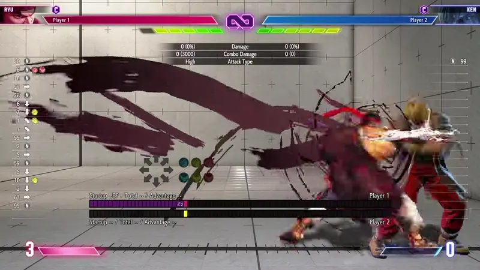
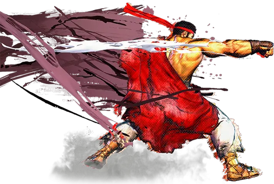
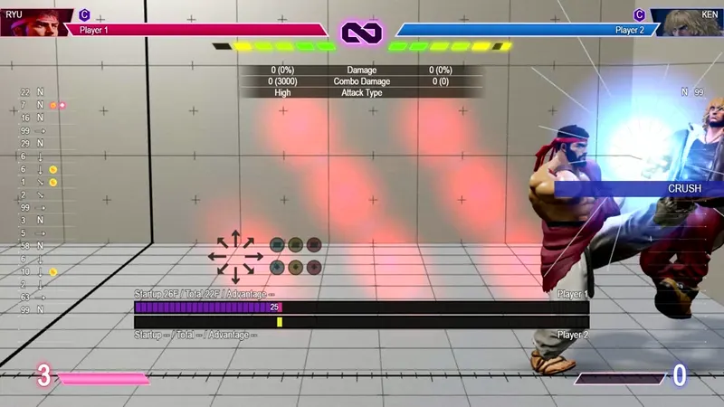

Why Recreation?
为什么要做“游戏复刻”？
Benchmarks for automated game development are emerging rapidly [1, 2]. Most follow an open-ended setup: give an agent a text prompt, then ask a language model to grade the resulting game. Because an open-ended prompt admits countless valid designs, there is no ground truth, and the evaluation rests on that model’s subjective notion of what makes a game “good.”
Recreation anchors evaluation in ground truth. When an agent recreates an existing game, the original game is the ground truth. We play the original game once, log every controller input alongside the video, and replay that exact input sequence on the agent’s recreation. The judge only has to verify whether the same inputs produce the same outcomes at the exact same moments, without scoring abstract quality.
Recreation also measures a capability that open-ended generation overlooks: reverse-engineering mechanics from visuals. To recreate a game from footage, an agent must infer the mechanics directly from that footage. Frontier vision–language models remain weak at this kind of situated visual understanding (Figure 3).
面向游戏开发的 AI 评测基准正在快速涌现 [1, 2]。目前主流的做法通常是开放式生成：给智能体一段文本提示词（Prompt），再让大语言模型去给生成的游戏打分。然而，一句提示词可以对应无数种合理的游戏设计。由于缺乏客观真值（Ground Truth），最终得分往往完全取决于大语言模型对“什么是好游戏”的主观偏好。
“复刻”让评测第一次有了客观的标准答案。智能体复刻一款现有游戏，原版游戏就是天然的标准答案。我们将人类游玩原版游戏时的每一次按键操作连同画面一并录制下来，随后在智能体构建的复刻游戏中，从相同的初始状态回放完全一致的按键序列。此时，裁判只需核验在同一时刻、相同按键下，两边是否发生了完全相同的事，用不着评判抽象的“好玩程度”。
游戏复刻还考察了一项开放式生成无法触及的核心能力：从像素中逆向工程游戏机制。要想仅凭实机画面复刻一款游戏，智能体必须直接从画面中读懂游戏机制，比如冲刺一次移动多远、挥出一拳需要多少帧，还有命中时的受击反馈是什么样。而当前前沿的视觉-语言模型（VLM），恰恰在这种情境化的动态视觉理解上表现薄弱（图 3）。
How We Evaluate
评测方法
Our evaluation pipeline pairs human gameplay capture with deterministic replay:
- Build: In each task, an agent is given recordings of real human gameplay, including the videos and the inputs. The agents have to then build a playable web recreation.
- Replay: Initialized from the same starting states, we replay the recorded human inputs on the candidate game and capture the resulting footage.
- Judge: An automated judge compares the reference and candidate recordings on rubrics based on the video and the game's wiki.
我们的评测管线将“人类实机采集”与“确定性输入回放”紧密结合：
- 构建（Build）：在每个任务中，智能体都会获得真实人类游玩的记录，包括视频和输入操作。随后，智能体需要构建一个可游玩的 Web 端复刻游戏。
- 回放（Replay）：我们将候选游戏置于相同的初始状态，回放记录的人类输入操作，并采集运行画面。
- 评判（Judge）：自动裁判模型依据源自视频和游戏 Wiki 的评分准则，对比原版与候选游戏的录像。
Tasks from Real Gameplay
从真实游戏中构建评测任务
| Component | Specification |
|---|---|
| Task | Recreate a playable version of the target game |
| Input | Gameplay videos + player input trajectories |
| Output | A playable web game that behaves identically under the same input sequences |
| 维度 | 具体设定 |
|---|---|
| 任务目标 | 复刻目标游戏的可游玩版本 |
| 模型输入 | 实机游玩视频 + 同步的玩家按键轨迹（《街头霸王6》额外提供 Wiki 招式数据） |
| 模型输出 | 在相同输入序列下，行为表现与原版一致的可交互网页游戏 |
To construct a task, we captured recordings of human gameplay, including both the video and the input trajectories. Each task consists of multiple recording sessions: for example, the Street Fighter 6 task contains 23 recordings spanning basic movement, fighting, special moves, and combos. Every session has a fixed beginning, and the agent’s recreation must expose matching states so every replay starts from identical initial conditions.
The environment can scale well beyond our own recordings by sourcing videos from the Internet. To that end, we used the NitroGen dataset [5], which derives gamepad inputs from on-screen overlays for 40,000 hours of public gameplay video across more than 1,000 games. From these, we filtered down to game sessions with more deterministic gameplay for fair evaluation.
为了构建评测任务，我们采集了人类游玩的记录，包括视频和输入轨迹。每个任务由多段录制的游玩流程组成：例如，《街头霸王6》任务包含 23 段录像，涵盖基础移动、战斗、必杀技和连段。每段流程都有固定的起点，智能体的复刻版必须提供对应的状态，以确保每次回放都从完全一致的初始条件开始。
通过从互联网获取视频，这套环境的规模可以远超我们自己录制的内容。为此，我们使用了 NitroGen 数据集 [5]，该数据集从屏幕上的按键显示中提取手柄输入，覆盖 1,000 多款游戏、共 40,000 小时的公开实机视频。我们从中筛选出玩法更具确定性的游玩片段，以进行公平评测。
Street Fighter 6 · movement《街头霸王6》· 基础移动
Street Fighter 6 · special moves《街头霸王6》· 必杀技
Street Fighter 6 · Super Art 1《街头霸王6》· 超必杀技 1
Celeste · the first strawberry《蔚蓝》· 第一颗草莓
Rubrics Grounded in the Wiki
锚定游戏 Wiki 的评分准则
We want to evaluate agents on recreation of game mechanics, but game mechanics can be difficult to infer from just gameplay footage without prior knowledge. Therefore, questions derived from video alone are often forced to ask whether two clips “look similar,” pushing ambiguity back onto the judge.
Community wikis provide information for grounded evaluation. For example, in Street Fighter 6, the SuperCombo Wiki [3] documents exact startup, active, and recovery frames, alongside damage and stun values for every move. Because the game’s Training Mode renders startup, total duration, and damage directly on the HUD, our judge can cross-examine both the visual action and the exact frame-meter readouts across recordings.
单凭实机画面，你能看出角色挥出了一拳，但很难看出这一拳是在“第 4 帧”才开始产生攻击判定的。如果仅依赖实机画面出题，问题往往只能停留在“两者看起来像不像”，这又把模糊的裁量权推给了裁判。
社区维护的游戏 Wiki 恰好填补了这一空白。以《街头霸王6》为例，SuperCombo Wiki [3] 详尽记录了每一招的发生帧（Startup）、持续帧（Active）、硬直/恢复帧（Recovery）以及伤害与眩晕值。由于原版游戏的训练模式会在屏幕上实时显示发生帧、总帧数和伤害数值，裁判模型可以直接在两段录像中交叉比对画面动作与帧数槽（Frame Meter）读数。
| Footage-Only Question | Wiki-Grounded Question |
|---|---|
| Standing normals. Do the recorded light, medium, and heavy punches and kicks each produce a distinct standing attack? | 5LP Standing Light Punch (whiff). At 0.42s, Ryu performs 5LP (Standing Light Punch) and whiffs. Wiki frame data: startup 4, active 3, recovery 7, total 13 frames. In the reference video, the frame meter reads "Startup 4F / Total 13F / Advantage --". Does the candidate game produce the same move and outcome at that timestamp, with matching frame-meter values?
|
| 仅凭实机录像编写的问题 | 锚定游戏 Wiki 编写的问题 |
|---|---|
| 站立通常技。录像中的轻、中、重拳与轻、中、重脚，是否各自产生了区分明显的站立攻击动作？ | 5LP 站立轻拳（挥空）。在 0.42s 处，隆使出 5LP（站立轻拳）并挥空。Wiki 帧数数据：发生 4 帧、持续 3 帧、硬直 7 帧，总计 13 帧。原版录像中帧数槽随后显示 "Startup 4F / Total 13F / Advantage --"。候选游戏在该时刻是否使出了相同招式并产生相同结果？其帧数槽读数是否与原版一致？
|
We construct rubrics through a three-stage human-in-the-loop pipeline:
- Input: We prepare public gameplay videos and the related wiki pages as input.
- Rubric: We feed the input to a rubric agent, which generates two kinds of questions: gameplay mechanics (what it does) and visual fidelity (how it looks).
- Human validation: A human reviewer validates every question. In total, 272 of the 353 Street Fighter 6 questions cite ground-truth wiki specifications.
我们的评分准则（Rubrics）通过三步流程构建：
- 输入：我们准备公开的实机游玩视频和相关的 Wiki 页面作为输入。
- 生成准则：我们把这些输入交给一个评分准则智能体（Rubric Agent），由它生成两类题目：玩法机制（招式效果与数值）与视觉还原（动作外观表现）。
- 人工校验：人工审核员逐一校验题目。在《街头霸王6》的全部 353 道评测题中，有 272 道直接引用了 Wiki 的客观数据。



Judge.裁判理由：
Held-Out Trajectories
隐藏测试集：防止“面向录像编程”
An agent with access to the evaluation recordings could overfit (or even hardcode animations) to match those recordings rather than implementing generalizable game logic.
To test whether agents truly capture underlying mechanics, we evaluate on held-out input trajectories. These sessions share the same game and starting states, but execute input sequences the agent never sees during development. In Celeste (Chapter 1), for instance, the agent is given 9 recordings to build the game, while the remaining 23 held-out recordings are reserved strictly for evaluation.
如果智能体在开发阶段看得到测试录像，它就可能针对这些录像过拟合（甚至直接硬编码动画时间轴），而不是去实现真正通用的底层游戏逻辑。
为了检验智能体是否真正掌握了游戏机制，我们引入了留出测试集（Held-out Trajectories）。这些测试沿用相同的游戏与初始状态，但输入序列是智能体在开发阶段从未见过的。以《蔚蓝》（Celeste）第一章为例，智能体仅能获得 32 段录像中的 9 段用于构建游戏，其余 23 段留出录像仅用于最终评分。
What We See
核心实验发现
Frontier agents still struggle to pass even half of our rubric questions, and pass rates drop sharply on unseen trajectories.
- Generalization gaps: On Celeste, accuracy falls from 46% on given trajectories to 30% on held-out test trajectories, showing that matching reference clips is far easier than synthesizing generalizable platforming physics.
- Procedural rendering vs. generated 3D assets: When an agent renders visuals purely via procedural code (as in Celeste), nearly every visual check fails (7% pass rate). Conversely, in Street Fighter 6, where the agent used Tripo to generate 3D fighter meshes, visual fidelity (46%) roughly keeps pace with gameplay accuracy (46%).
- Long contexts and visual-intensive tasks: Models still struggle with tasks that require long contexts and extensive visual understanding. In game development, these demands can compromise LLM agents’ ability to autonomously develop and debug full video games.
- Limited spatial understanding: None of the models we tested could faithfully reconstruct the 3D scenes from the input videos. This is consistent with the spatial reasoning limitations documented in SAW-Bench [6].
目前，前沿智能体在两款游戏上的总通过率均未过半。在未见过的留出轨迹上，通过率更是明显下滑。
- 显著的泛化差距：在《蔚蓝》任务中，复刻版在可见录像上的通过率为 46%，但在未见过的留出测试集上跌至 30%。这表明，照着参考视频“对画面”远比编写一套可泛化的平台跳跃物理引擎容易得多。
- 纯代码手绘 vs. 3D 资产生成：当智能体完全依赖纯代码绘制所有画面时（如《蔚蓝》），视觉题几乎全军覆没（通过率仅 7%）。相比之下，在《街头霸王6》中，智能体调用了 Tripo 生成 3D 角色模型，其视觉题通过率（46%）与玩法机制题（46%）基本持平。
- 长上下文与密集视觉任务：模型在需要长上下文和大量视觉理解的任务中仍然表现不佳。在游戏开发中，这些要求可能限制 LLM 智能体自主开发和调试完整电子游戏的能力。
- 有限的空间理解能力：我们测试的所有模型都未能根据输入视频忠实重建 3D 场景。这与 SAW-Bench [6] 所记录的空间推理局限一致。
(Note: Pass rates are computed as Passes / All questions; a question the judge abstains on counts as not passed.)
（注：通过率计算公式为 通过数 / 全部题数，裁判弃权的题按未通过计。）
Can We Trust the Judge?
裁判模型可信吗？
Our judge answers narrow, verifiable questions backed by explicit visual evidence, and does not issue holistic scores. It is permitted to abstain (unknown) whenever the evidence does not conclusively settle a question. Every verdict logs both a natural-language rationale and the exact frames inspected, making audits straightforward.
Against 245 human-annotated labels, our automated judge achieves 70.2% exact agreement across all three classes (pass, fail, unknown), rising to 84.3% agreement on non-abstaining verdicts.
我们的裁判模型依据摆在面前的视觉证据回答高度聚焦的窄域问题，不做笼统的印象打分。证据不足以支撑确切结论，就允许裁判选择弃权（判定为 unknown）。每一条裁决都会完整记录判定理由及所依据的关键帧截图，方便研究人员随时溯源核查。
在与 245 条人工标注结果的比对中，自动裁判在三分类（通过 / 失败 / 未知）上的严格一致率达到 70.2%；在裁判未弃权的样本上，一致率高达 84.3%。
| Human label | Judge: pass | Judge: fail | Judge: unknown | Total |
|---|---|---|---|---|
| Pass | 84 | 17 | 11 | 112 |
| Fail | 15 | 88 | 30 | 133 |
| 人工标注 | 裁判：通过 | 裁判：失败 | 裁判：未知 | 合计 |
|---|---|---|---|---|
| 通过 | 84 | 17 | 11 | 112 |
| 失败 | 15 | 88 | 30 | 133 |
What’s Next
下一步计划
We are expanding the set of games and the models we evaluate, and running systematic ablation studies to find out what actually helps agents build better games: whether to provide structured wiki documents, whether to allow 3D asset generation tools, and whether to let agents replay inputs on their own while they develop.
We will soon open-source the benchmark, the automated replay framework and a leaderboard. Stay tuned.
我们正在持续扩充评测游戏库与参评基座模型，并开展系统的消融实验（Ablation Studies），以厘清究竟哪些因素能真正帮助智能体造出更好的游戏：例如是否提供结构化 Wiki 文档、是否开放 3D 资产生成工具，以及是否允许智能体在开发闭环中自主回放按键进行调试。
我们将于近期全面开源评测基准、自动化回放框架与排行榜，敬请期待。
References
参考文献
- Chi, W., Fang, Y., Yayavaram, A., et al. GameDevBench: Evaluating Agentic Capabilities Through Game Development. 2026. arXiv:2602.11103
- Luo, T., Wang, R., Bi, J., et al. GameCraft-Bench: Can Agents Build Playable Games End-to-End in a Real Game Engine? 2026. arXiv:2606.17861
- SuperCombo Wiki, Street Fighter 6. wiki.supercombo.gg
- Celeste Wiki. celeste.ink/wiki
- NVIDIA. NitroGen: gameplay videos with gamepad annotations. huggingface.co/datasets/nvidia/NitroGen
- Li, C., Han, R., Hsu, J., et al. SAW-Bench: Learning Situated Awareness in the Real World. 2026. arXiv:2602.16682